Hands-on lab
Lab 01. Deployment and Execution in OSCAR
This lab uses the ImageMagick example from OSCAR Hub to show a complete onboarding workflow: deploy the service, confirm that the generated resources are ready, execute a quick synchronous test, and then validate the asynchronous event-driven path by uploading files to the input bucket.
Before you start
Prerequisites
- A running OSCAR deployment with access to the Dashboard.
- Credentials to log in and enough quota to deploy services.
- One sample image for the synchronous test and optionally a few more images for the asynchronous test.
- Recommended references: Deploy OSCAR, OSCAR Dashboard, and OSCAR CLI.
Expected outcome
What you should get
- The ImageMagick service is deployed from OSCAR Hub.
- A synchronous request returns a valid grayscale image.
- An asynchronous upload creates jobs and stores grayscale outputs in the output bucket.
- You finish the lab understanding when to prefer sync or async execution.
0. Login to the OSCAR cluster
Open the Dashboard login page and sign in with an account that has permission to deploy services.
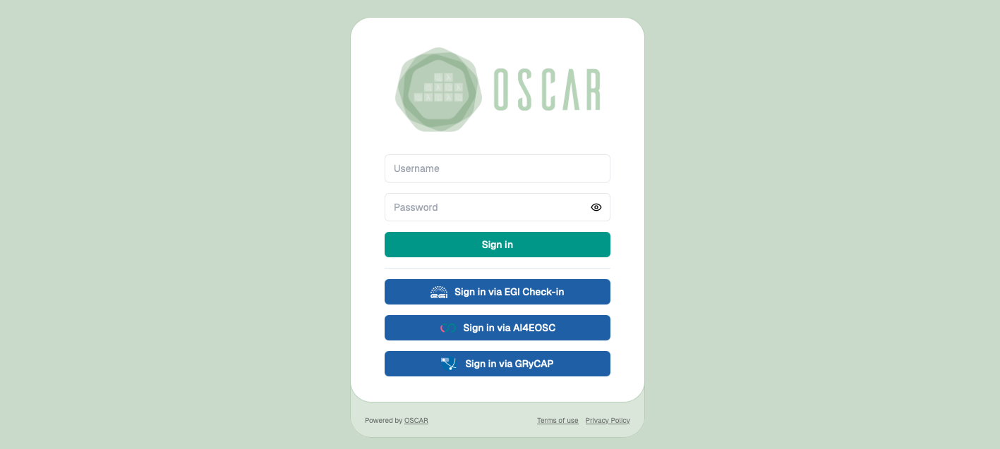
1. Find the ImageMagick service in OSCAR Hub
Log in to the Dashboard, open the OSCAR Hub catalog, and locate the ImageMagick service.
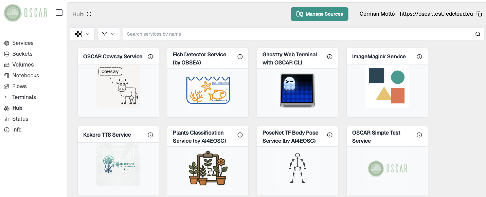
Browse the OSCAR Hub catalog and locate the ImageMagick service.
2. Review the service details and deployment options
Open the service card to inspect its description and confirm that it is the image-processing example you want to use for the lab.
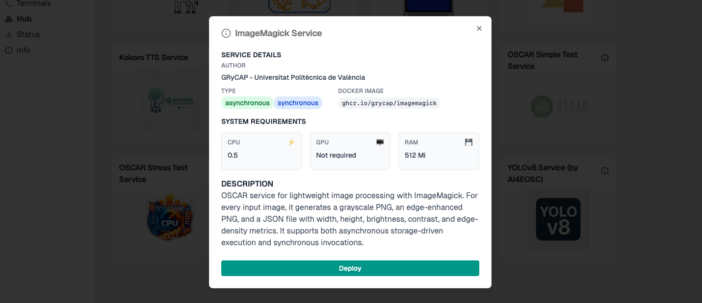
Check the service description before deploying it.
Review the deployment options and choose a service name that is easy to identify, together with a bucket name. Using the same name for both the service and the bucket can simplify the lab, but it is optional. Keep the default resource configuration for a first run unless you already know that you need different sizing.
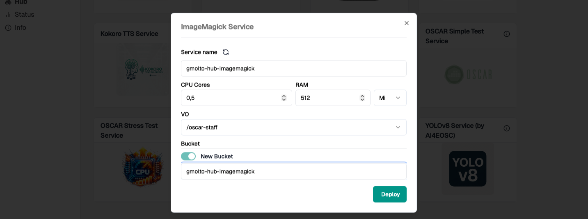
Use the resource configuration for the first hands-on execution.
3. Verify that the service is ready
Deploy the service and wait until it appears in the main services view of the Dashboard.
- Confirm that the deployment completed successfully.
- Check that the service token, logs action, and storage-related information are available.
- Verify that the required input and output locations have been created.
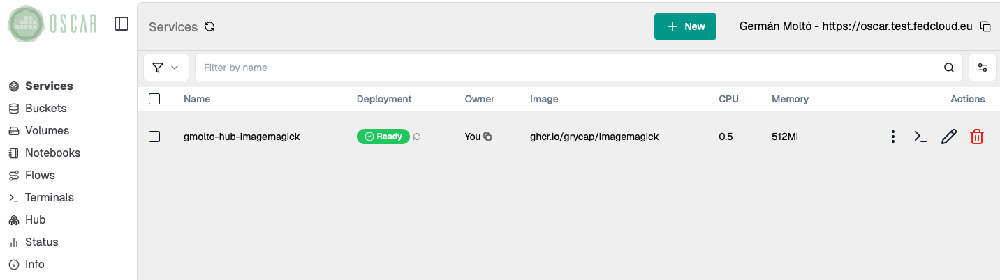
Wait until the deployed service is visible in the main Dashboard view.
4. See the OSCAR service details
Open the deployed service and review its token, storage configuration, and available actions before invoking it.
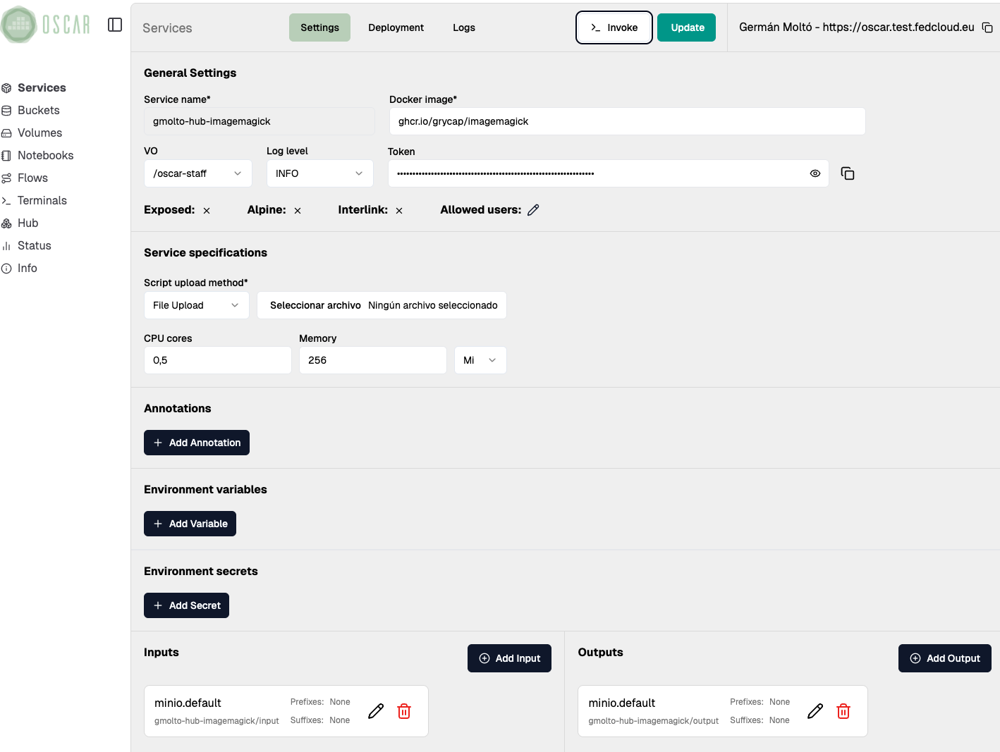
5. Run a synchronous invocation
Open the service invocation view from the Dashboard and upload a sample image.
{kind=link}
- Use this step as a quick validation that the service image and runtime are working correctly.
- Inspect the response and confirm that the output corresponds to the grayscale version of the original file.
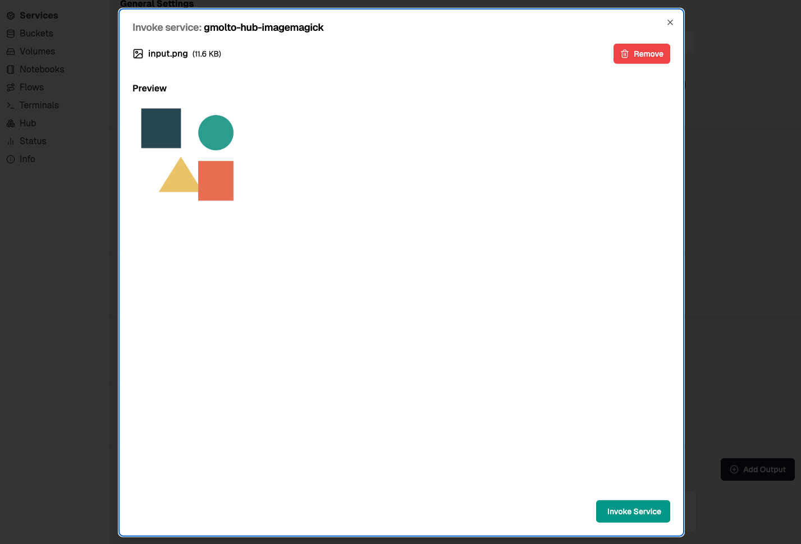
Upload the input payload from the Dashboard invocation view.
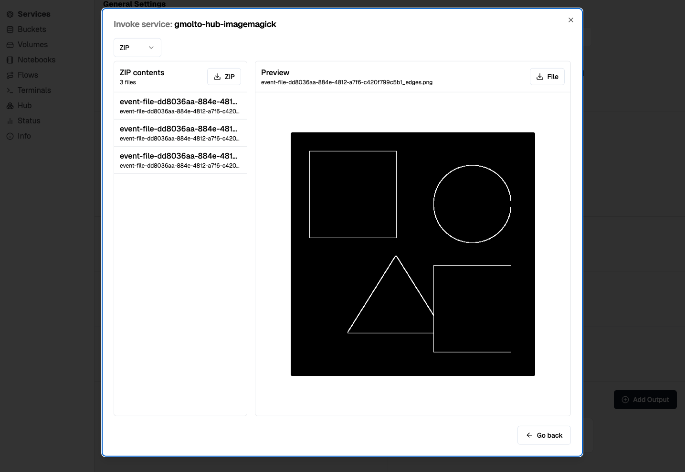
Inspect the response returned by the synchronous invocation.
6. Open the service bucket
Find the service bucket in the Dashboard:
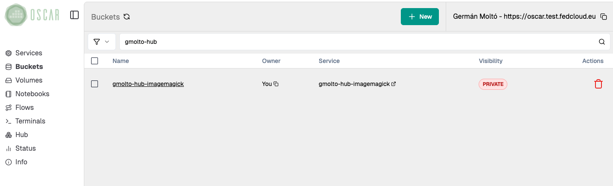
7. Run an asynchronous execution
Upload one or several images into the bucket.
- Each upload should trigger the service automatically.
- Use multiple files if you want to observe the event-driven behaviour more clearly.
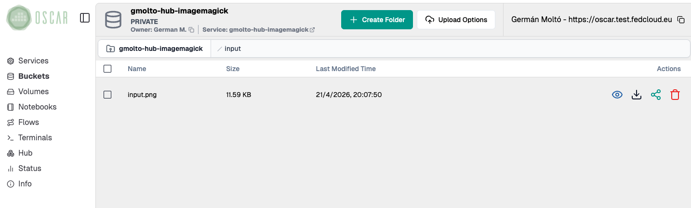
Upload one or more images to trigger asynchronous execution.
8. Check the job(s)
Follow the jobs from the logs panel and wait until they reach the Succeeded state.
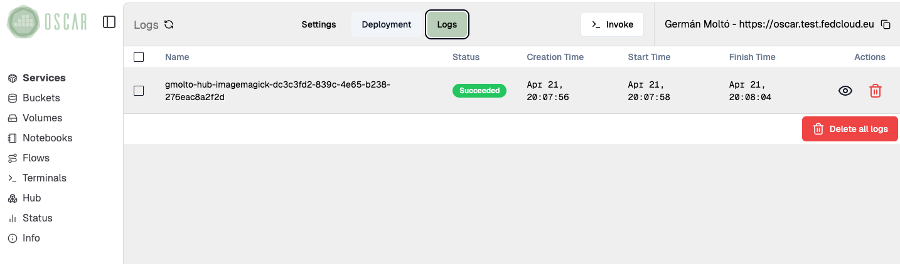
Inspect the lifecycle and status of the asynchronous jobs.
9. List and verify the output(s)
Finally, open the output bucket and verify that the processed files were converted to grayscale.
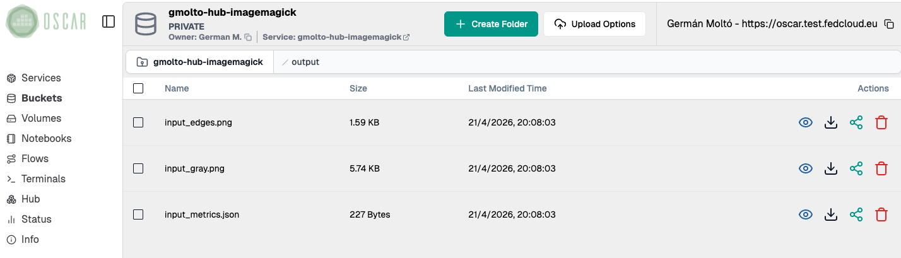
Validate the resulting files in the output bucket.
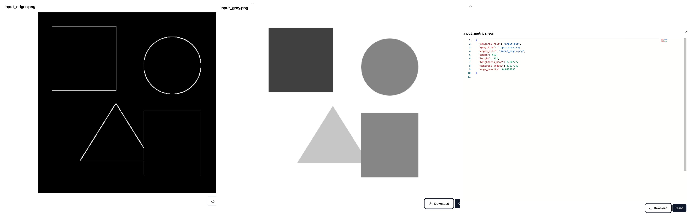
10. Delete the service
When you finish the lab, if you do not plan to proceed with additional hands-on labs, delete the service to clean up the deployed service if it is no longer needed. The associated bucket will be automatically deleted.
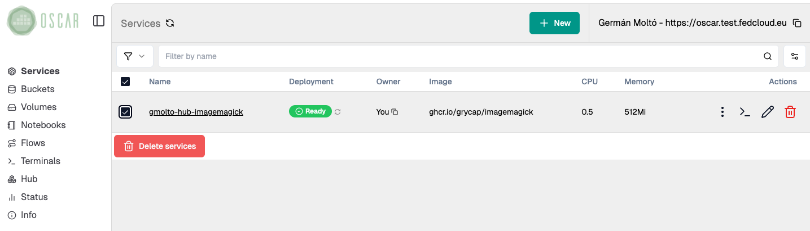
Summary
Key takeaways
- Synchronous execution gives immediate feedback and is useful as a smoke test.
- Asynchronous execution is better aligned with OSCAR's event-driven model for file-processing workloads.
- Both execution modes use the same service but differ in how the request is triggered and how the result is inspected.
Final checklist
What you should verify before finishing
- The ImageMagick service was deployed successfully from OSCAR Hub.
- The synchronous invocation returned a valid result.
- The asynchronous upload triggered jobs and produced output files.
- You can explain the practical difference between sync and async execution in OSCAR.